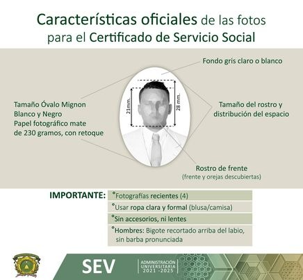

Servicio social y prácticas profesionales
Servicio Social
Público:
Dependencias y programas de los Gobiernos Federal,
Estatal y Municipal
Salud: Dependencias y programas de los Gobiernos Federal y Estatal
Educativo: Instituciones y dependencias de los Gobiernos Federal y Estatal
Social: Dependencias no gubernamentales, sin fines de lucro y legalmente constituidas
Nota: No se autoriza el servicio social en; el extranjero, partidos políticos, congregaciones religiosas, familiares o personas físicas.
Salud: Dependencias y programas de los Gobiernos Federal y Estatal
Educativo: Instituciones y dependencias de los Gobiernos Federal y Estatal
Social: Dependencias no gubernamentales, sin fines de lucro y legalmente constituidas
Nota: No se autoriza el servicio social en; el extranjero, partidos políticos, congregaciones religiosas, familiares o personas físicas.
- Asiste a la plática de inducción al servicio social
- Registra tu servicio social con el responsable en tu espacio académico al iniciarlo
- Entrega la documentación solicitada, en tiempo y forma
- Considera el costo por las fotos y el pago de derechos del Certificado de Servicios Social al concluirlo

- Formato 1: INSCRIPCION AL SERVICIO SOCIAL
- Formato 2: CARTA DE PRESENTACIÓN Y ACEPTACIÓN
- Formato 3: INFORME
- Formato 4: CARTA DE TERMINACION
- Formato 5: EVALUACIÓN DEL PRESTADOR
- Formato 6: SOLICITUD DEL CERTIFICADO
- Formato 7: RELACION DE SOLICITUDES
- Formato 8: RELACION DE CERTIFICADOS
- Formato 9: ENCUESTA DE SATISFACCION DEL USUARIO
- Formato 10: BAJA DEL PRESTADOR
- Anexo: GUIA PARA EL LLENADO DE LA SOLICITUD DEL CERTIFICADO
Prácticas profesionales
1.- Actividad académica obligatoria que el alumno deberá realizar en ámbitos reales de desempeño
profesional, para integrar y aplicar los conocimientos adquiridos.
2.- Los practicantes podrán cubrir las horas especificadas a lo largo del periodo escolar, dependiendo de las características del programa o proyecto en el cual se inserten, teniendo una duración mínima de 280 horas para estudios de técnico profesional y de 480 horas para los estudios de licenciatura, efectuándose en un plazo no menor de un periodo escolar ni mayor a dos periodos escolares.
3.- La elección del plazo dependerá de lo señalado en el plan de estudios, las necesidades específicas del alumno, así como las condiciones de la unidad receptora.
2.- Los practicantes podrán cubrir las horas especificadas a lo largo del periodo escolar, dependiendo de las características del programa o proyecto en el cual se inserten, teniendo una duración mínima de 280 horas para estudios de técnico profesional y de 480 horas para los estudios de licenciatura, efectuándose en un plazo no menor de un periodo escolar ni mayor a dos periodos escolares.
3.- La elección del plazo dependerá de lo señalado en el plan de estudios, las necesidades específicas del alumno, así como las condiciones de la unidad receptora.
Permite el registro y validación ante la UAEM, de las actividades y proyectos derivados de la
Práctica o Estancia Profesional.
- Facilita el seguimiento y evaluación de las actividades desarrolladas dentro de la empresa, organización o institución.
- Permite la entrega eficiente y oportuna de la documentación.
- Permite a los espacios académicos de la UAEM, obtener información sobre el desempeño de los jóvenes universitarios en las dependencias receptoras, y fortalecer los planes y programas de estudio.
Las prácticas o estancias profesionales las realizarán los alumnos que cursen estudios de técnico
profesional y licenciatura, siempre
que hayan cursado 70% de créditos señalados para tal efecto en el plan de estudios.
- Contribuir con la formación integral del alumno, a través de la aplicación de conocimientos teóricos y la actividad práctica en situaciones reales del ámbito profesional;
- Desarrollar y fortalecer conocimientos, habilidades, destrezas, actitudes, aptitudes y valores en los alumnos, tendentes a lograr un desempeño profesional competente;
- Promover la práctica de acuerdo a la formación profesional del alumno;
- Contribuir como fuente de información permanente para la adecuación y actualización de los planes y programas de estudio;
- Vincular al alumno con posibles ámbitos laborales en los que podrá desempeñarse profesionalmente;
- Desarrollar, fortalecer y consolidar la vinculación del espacio académico con los sectores social y productivo;
- Promover espacios de interacción y beneficio mutuo que contribuyan en la solución de problemáticas reales y permitan reafirmar en el alumno su responsabilidad social y ética con su profesión.